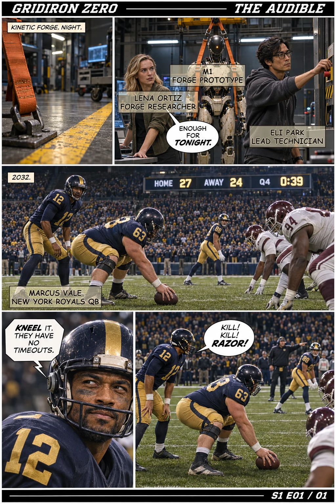

<!doctype html>
<html lang="en"><meta charset="utf-8"><meta name="viewport" content="width=device-width,initial-scale=1">
<title>Gridiron Zero · Read the opening five | Astralnaut Studios</title>
<meta name="description" content="A quarterback loses his throwing arm. A machine remembers his game. Read the first five episodes of Gridiron Zero free.">
<meta property="og:title" content="Read Gridiron Zero · The opening five"><meta property="og:image" content="https://astralnautstudios.com/gridiron/pages/e1-01.webp">
<style>
*{box-sizing:border-box}body{margin:0;background:#131516;color:#f6f1e6;font:16px/1.4 system-ui,sans-serif}header,main,footer{max-width:950px;margin:auto;padding:14px clamp(12px,3vw,28px)}header{display:flex;align-items:baseline;justify-content:space-between;border-bottom:1px solid #464741}h1{font:italic 800 clamp(25px,5vw,46px)/1 system-ui;margin:0;letter-spacing:-.05em}header a,footer a{color:#dcc492}label{font-size:.87rem}select,button,.action{padding:9px 12px;color:inherit;background:#272b2b;border:1px solid #646761;border-radius:5px;font:inherit}button:focus-visible,a:focus-visible,select:focus-visible{outline:3px solid #f5cb69}button{cursor:pointer}button:disabled{opacity:.4;cursor:default}.next,.action{background:#ead29b;color:#182020;font-weight:650}.bar,nav{display:flex;align-items:center;justify-content:space-between;gap:8px}.bar{flex-wrap:wrap;margin-bottom:9px}.art{display:block;width:100%;height:auto}.sheet{display:block;max-width:800px;margin:auto;background:#202323}.sheet:focus-visible{outline:3px solid #f5cb69}nav{padding-top:12px}footer{border-top:1px solid #454742;font-size:.83rem;color:#b6b9b4;margin-top:18px}footer button{font-size:.8rem}.end{margin:12px 0}.end a{display:inline-block}.zoom{color:#ebd29c;font-size:.85rem}small{color:#cdc5b4}
</style>
<header><h1>GRIDIRON ZERO</h1><a href="/">Astralnaut Studios</a></header>
<main><div class="bar"><label>Season 1 &nbsp;<select aria-label="Choose episode" id="episodes"></select></label><small aria-live="polite" id="counter"></small></div>
<a class="sheet" id="zoom" aria-label="Open the full-size comic page"></a>
<nav aria-label="Comic navigation"><button id="prev">Previous</button><button id="next" class="next">Next page →</button></nav>
<section id="end" class="end" hidden><h2>You’ve read the opening five.</h2><a href="#1-1">Return to The Audible</a></section>
<noscript>Enable JavaScript to turn pages.</noscript></main>
<footer><p>Gridiron Zero is a work of fiction. Any resemblance to actual persons, living or deceased, is purely coincidental.</p><p id="prefs"></p></footer>
<script src="./reader.js" defer></script></html>
